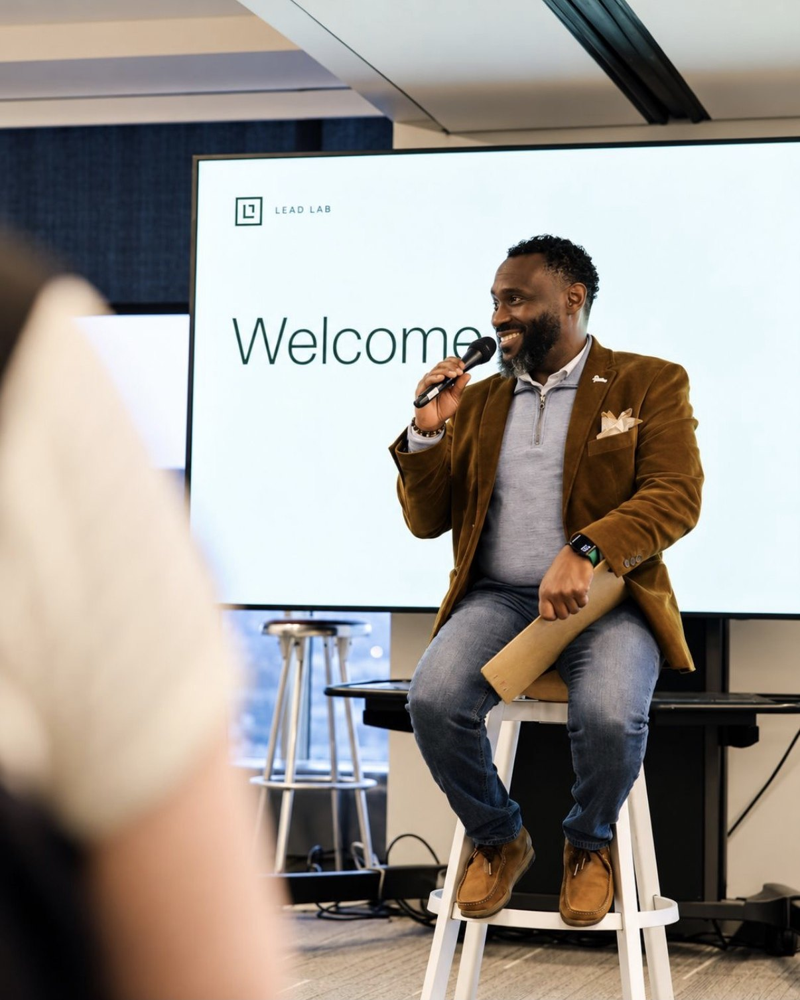
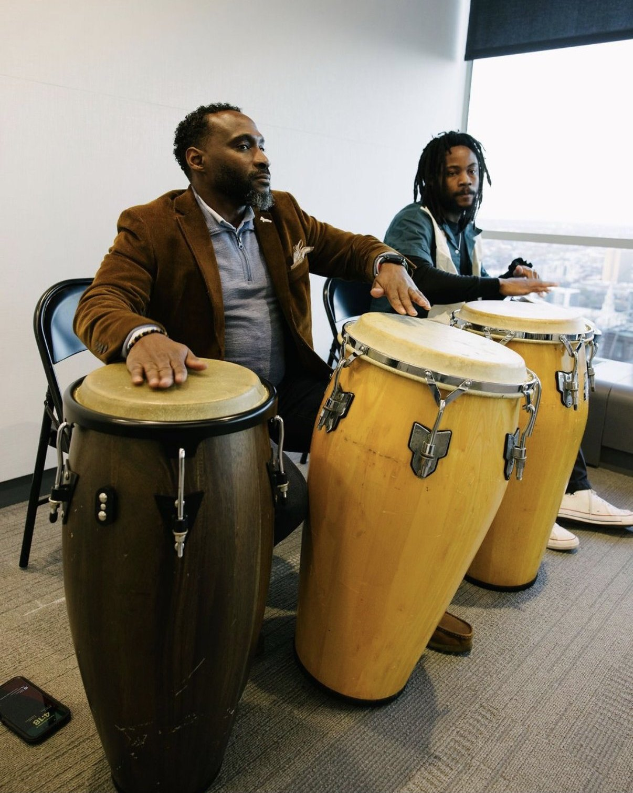
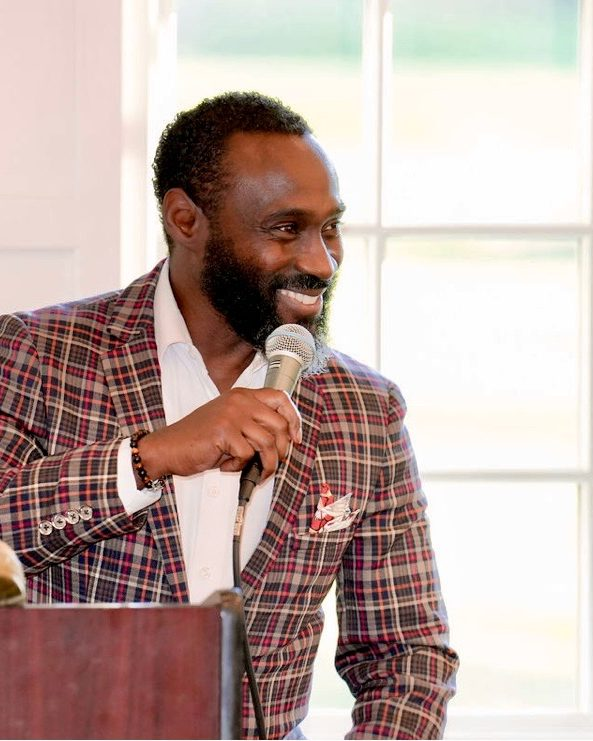
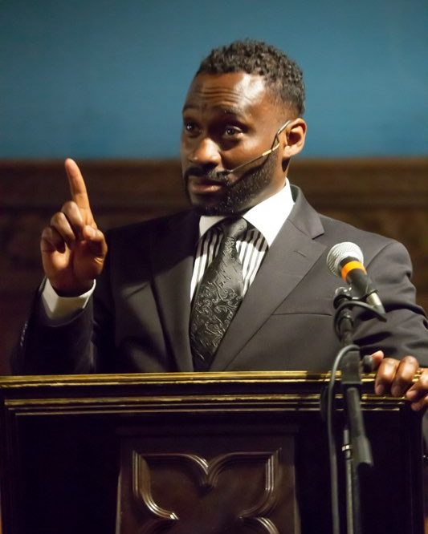
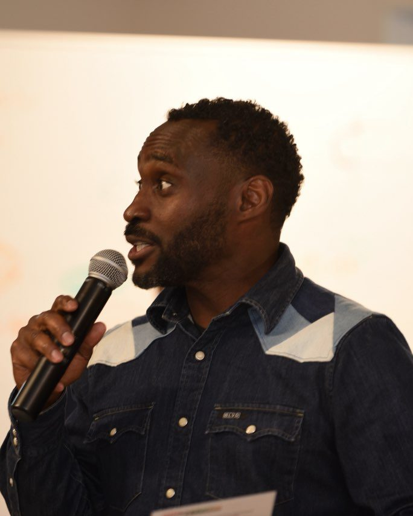

Speaking and writing
A stage, a room, a conversation
I speak, facilitate, perform, teach, and emcee in community, nonprofit, arts, and leadership settings. Twenty-five years as a theatre artist and two decades in nonprofit leadership meet on every stage, and I've performed and led workshops in the United States, Europe, North Africa, and the Caribbean.
- Keynotes
- Panels
- Workshops
- Trainings
- Facilitated conversations
- Podcast interviews
- Performance
- Emceeing
Watch
Reading the Declaration, 250 years later
A panel at the Uptown Knauer Performing Arts Center in West Chester, part of Chester County's America250 work. Everyone on stage had taken part in the county's public reading of the Declaration of Independence. I spoke about what the Declaration, the Constitution, and our government mean today, from where I stand as a Black man in America.
Read the transcript
It wasn't like the Pledge of Allegiance for us. So we weren't given the training or the opportunity to learn how to dissect or digest or to own the Declaration. So for me, I didn't really encounter it until my adult years. And even then... I think your first question was, how does it feel? How did it feel? Even then, the experience was layered. Even when we read it, there was anger, there was frustration, there was despondency. It was a layered experience because it became a little overwhelming.
More from the reading
- Chester County Reads the Declaration of Independence Chester County Community Foundation, on YouTube
- Dare to Declare, Masterworks 3: Made in America Brandywine Valley Symphony, on YouTube
LeadLab, 2025 cohort
LeadLab, where creative leaders grow
LeadLab is an intensive leadership program for creative professionals in Philadelphia. Each cohort brings people from different fields into one room to learn from each other, work with new leadership frameworks, and practice leading with more courage, intention, and connection.
-
The cohort
Creative professionals from different sectors learn side by side, and their peers are some of their best teachers.
-
The Summit
Curated learning spaces and fresh frameworks for how creatives lead. The 2026 Summit theme is courage.
-
The Showcase
Each December the program opens to alumni, partners, and the wider community for an evening of reflections, performances, and conversation.


On the mic and on the congas
I was part of the 2025 cohort. That December, LeadLab held its first-ever Showcase at Ballinger's studio in Philadelphia, and I was one of the evening's featured performers.
Talks and workshops
Topics
Each can run as a keynote, a panel contribution, a facilitated conversation, or a hands-on workshop.
From Connection to Collective Action: Building Community Partnerships That Last
A practical approach to listening, identifying shared interests, and helping partners move from goodwill to clear, sustained action.
The Creative Strategist: What Artists Teach Us About Leadership and Change
Participants explore how creative practice builds adaptability, empathy, collaboration, and the ability to imagine a different way forward.
Fundraising Is About People: Turning Relationships into Shared Investment
Philanthropy, reframed as relationship building and allyship. Audiences identify the conversations and practices that can strengthen support for their work.
Belonging Is Built: Facilitating Dialogue Across Difference
Ways to create thoughtful spaces where people with different experiences can speak, listen, and find a next step they own together.
The RAPPORT Framework: Cultivating, Nurturing, and Sustaining Community Relationships
The ideas from my published chapter, and how organizations can practice a more intentional, positive relationship with the communities they serve. See the framework
Where I've spoken
Rooms I know well
- Community and cultural eventsIncluding the Coatesville Juneteenth Freedom Celebration.
- Leadership programsLeadLab, board and leadership retreats, and professional development cohorts.
- Civic conveningsAmerica250 Greater Coatesville convenings and community planning sessions.
- Fundraising events and galasAs emcee, speaker, and performer.

Book chapter by Ajené Livingston, 2026
Cultivating, Nurturing and Sustaining a Positive Community Rapport
One chapter in Nonprofit Sustainability: Strategies for Surviving & Thriving, edited by Louis J. Beccaria, Ph.D. and Constance Carter, CFRE. The book is a collection of practical essays by 31 experienced nonprofit leaders on finance, governance, engagement, and fund development.
Public trust is the currency of the nonprofit sector.
My chapter opens with the story of how I found my voice at Coatesville Cultural Society. From there it makes the case that a nonprofit's reputation is built through relationships: listening to the community, sharing decisions, practicing transparency, and treating funders and residents as partners. It closes with the RAPPORT framework.
- ISBN
- 979-8-9528518-7-0
- Publisher
- BookPlus Publishing
- Formats
- Paperback and Kindle
Signature framework
RAPPORT: a way of being for nonprofits
Seven commitments for building community trust that lasts. Select a letter to read each one.
Respect for dignity
Honor the humanity in every interaction.
Authentic engagement
Build relationships that are real, not transactional.
Purpose alignment
Ensure your work is meaningful and necessary.
Participatory ownership
Invite people into the work, not just around it.
Organizational integrity
Lead with transparency and accountability.
Resource stewardship
Treat every contribution with intention and care.
Transformational impact
Work toward eliminating the need for your existence.
Press
In the news

"Electric"
-
Daily Local News · August 17, 2022
Free Shakespeare performances coming to Chester County -
Daily Local News · October 3, 2022
Coatesville Parks and Recreation Commission forging new paths to create sense of community -
Daily Local News · October 26, 2022
Pavilion of Trees event returning to Coatesville
On stage
Performance and teaching



For event organizers
Speaker bio
Read it from the stage or print it in the program. A high-resolution headshot is available on request.
Ajené Livingston is a community-centered strategist, nonprofit leader, and performance artist. With more than 20 years in nonprofit leadership, fundraising, and community engagement and more than 25 years in theatre, Ajené brings people and organizations together to turn shared purpose into practical action. A Brooklyn native raised in a Caribbean home, Ajené is rooted in Chester County and works across philanthropy, leadership and board development, community partnerships, and the arts. Ajené believes fundraising is about people and shared community investment, and that when we work together, we achieve incredible results. Ajené is a contributing author to Nonprofit Sustainability: Strategies for Surviving & Thriving.
Planning an event